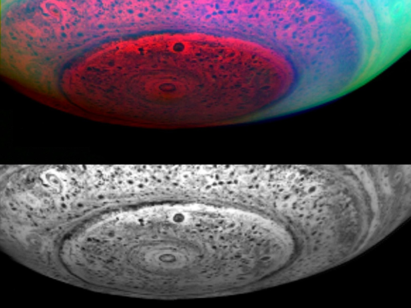

Saturn is the sixth planet from the Sun and the second-largest in the Solar System, after Jupiter. It is a gas giant with an average radius of
about nine and a half times that of Earth. It only has one-eighth the average density of Earth; however, with its larger volume, Saturn is
over 95 times more massive. Saturn is named after the Roman god of wealth and agriculture.
1 / 5
2 / 5
3 / 5
4 / 5

5 / 5
Saturn's interior is most likely composed of a core of iron–nickel and rock (silicon and oxygen compounds). Its core is surrounded by a
deep layer of metallic hydrogen, an intermediate layer of liquid hydrogen and liquid helium, and finally a gaseous outer layer. Saturn has
a pale yellow hue due to ammonia crystals in its upper atmosphere. An electrical current within the metallic hydrogen layer is thought to
give rise to Saturn's planetary magnetic field, which is weaker than the Earth's, but which has a magnetic moment 580 times that of Earth
due to Saturn's larger size. Saturn's magnetic field strength is around one-twentieth of Jupiter's. The outer atmosphere is generally
bland and lacking in contrast, although long-lived features can appear. Wind speeds on Saturn can reach 1,800 km/h (1,100 mph; 500 m/s),
higher than on Jupiter but not as high as on Neptune.
The planet's most famous feature is its prominent ring system, which is composed mostly of ice particles, with a smaller amount of rocky
debris and dust. At least 83 moons are known to orbit Saturn, of which 53 are officially named; this does not include the hundreds of
moonlets in its rings. Titan, Saturn's largest moon and the second largest in the Solar System, is larger than the planet Mercury, although
less massive, and is the only moon in the Solar System to have a substantial atmosphere.
Physical characteristics
Saturn is a gas giant composed predominantly of hydrogen and helium. It lacks a definite surface, though it may have a solid core. Saturn's
rotation causes it to have the shape of an oblate spheroid; that is, it is flattened at the poles and bulges at its equator. Its equatorial and
polar radii differ by almost 10%: 60,268 km versus 54,364 km. Jupiter, Uranus, and Neptune, the other giant planets in the Solar System, are
also oblate but to a lesser extent. The combination of the bulge and rotation rate means that the effective surface gravity along the equator,
8.96 m/s2, is 74% of what it is at the poles and is lower than the surface gravity of Earth. However, the equatorial escape velocity of nearly
36 km/s is much higher than that of Earth.
Saturn is the only planet of the Solar System that is less dense than water—about 30% less. Although Saturn's core is considerably denser
than water, the average specific density of the planet is 0.69 g/cm3 due to the atmosphere. Jupiter has 318 times Earth's mass, and Saturn
is 95 times Earth's mass. Together, Jupiter and Saturn hold 92% of the total planetary mass in the Solar System.
Internal structure
Despite consisting mostly of hydrogen and helium, most of Saturn's mass is not in the gas phase, because hydrogen becomes a
non-ideal liquid when the density is above 0.01 g/cm3, which is reached at a radius containing 99.9% of Saturn's mass. The
temperature, pressure, and density inside Saturn all rise steadily toward the core, which causes hydrogen to be a metal in the deeper layers.
Standard planetary models suggest that the interior of Saturn is similar to that of Jupiter, having a small rocky core
surrounded by hydrogen and helium, with trace amounts of various volatiles. This core is similar in composition to Earth,
but is more dense. The examination of Saturn's gravitational moment, in combination with physical models of the interior, has
allowed constraints to be placed on the mass of Saturn's core. In 2004, scientists estimated that the core must be 9–22 times
the mass of Earth, which corresponds to a diameter of about 25,000 km. However, measurements of Saturn's rings suggest
a much more diffuse core with a mass equal to about 17 Earths and a radius equal to around 60% of Saturn's entire radius. This
is surrounded by a thicker liquid metallic hydrogen layer, followed by a liquid layer of helium-saturated molecular hydrogen that
gradually transitions to a gas with increasing altitude. The outermost layer spans 1,000 km and consists of gas.
Saturn has a hot interior, reaching 11,700 °C at its core, and radiates 2.5 times more energy into space than it receives from
the Sun. Jupiter's thermal energy is generated by the Kelvin–Helmholtz mechanism of slow gravitational compression, but such a process
alone may not be sufficient to explain heat production for Saturn, because it is less massive. An alternative or additional mechanism
may be generation of heat through the "raining out" of droplets of helium deep in Saturn's interior. As the droplets descend through
the lower-density hydrogen, the process releases heat by friction and leaves Saturn's outer layers depleted of helium. These
descending droplets may have accumulated into a helium shell surrounding the core. Rainfalls of diamonds have been suggested to
occur within Saturn, as well as in Jupiter and ice giants Uranus and Neptune.
Atmosphere
The outer atmosphere of Saturn contains 96.3% molecular hydrogen and 3.25% helium by volume. The proportion of helium
is significantly deficient compared to the abundance of this element in the Sun. The quantity of elements heavier than
helium (metallicity) is not known precisely, but the proportions are assumed to match the primordial abundances from the
formation of the Solar System. The total mass of these heavier elements is estimated to be 19–31 times the mass of the Earth,
with a significant fraction located in Saturn's core region.
Trace amounts of ammonia, acetylene, ethane, propane, phosphine, and methane have been detected in Saturn's atmosphere. The upper clouds
are composed of ammonia crystals, while the lower level clouds appear to consist of either ammonium hydrosulfide (NH4SH) or water. Ultraviolet radiation
from the Sun causes methane photolysis in the upper atmosphere, leading to a series of hydrocarbon chemical reactions with the resulting products being
carried downward by eddies and diffusion. This photochemical cycle is modulated by Saturn's annual seasonal cycle.
Cloud layers
Saturn's atmosphere exhibits a banded pattern similar to Jupiter's, but Saturn's bands are much fainter and are much wider near the
equator. The nomenclature used to describe these bands is the same as on Jupiter. Saturn's finer cloud patterns were not observed until
the flybys of the Voyager spacecraft during the 1980s. Since then, Earth-based telescopy has improved to the point where regular
observations can be made.
The composition of the clouds varies with depth and increasing pressure. In the upper cloud layers, with the temperature in
the range 100–160 K and pressures extending between 0.5–2 bar, the clouds consist of ammonia ice. Water ice clouds begin at a
level where the pressure is about 2.5 bar and extend down to 9.5 bar, where temperatures range from 185 to 270 K. Intermixed
in this layer is a band of ammonium hydrosulfide ice, lying in the pressure range 3–6 bar with temperatures of 190–235 K. Finally,
the lower layers, where pressures are between 10 and 20 bar and temperatures are 270–330 K, contains a region of water droplets
with ammonia in aqueous solution.
Saturn's usually bland atmosphere occasionally exhibits long-lived ovals and other features common on Jupiter. In 1990, the
Hubble Space Telescope imaged an enormous white cloud near Saturn's equator that was not present during the Voyager encounters,
and in 1994 another smaller storm was observed. The 1990 storm was an example of a Great White Spot, a unique but short-lived
phenomenon that occurs once every Saturnian year, roughly every 30 Earth years, around the time of the northern hemisphere's
summer solstice. Previous Great White Spots were observed in 1876, 1903, 1933 and 1960, with the 1933 storm being the most
famous. If the periodicity is maintained, another storm will occur in about 2020.
The winds on Saturn are the second fastest among the Solar System's planets, after Neptune's. Voyager data indicate peak
easterly winds of 500 m/s (1,800 km/h). In images from the Cassini spacecraft during 2007, Saturn's northern hemisphere
displayed a bright blue hue, similar to Uranus. The color was most likely caused by Rayleigh scattering. Thermography has
shown that Saturn's south pole has a warm polar vortex, the only known example of such a phenomenon in the Solar System.
Whereas temperatures on Saturn are normally −185 °C, temperatures on the vortex often reach as high as −122 °C, suspected to
be the warmest spot on Saturn.
North pole hexagonal cloud pattern
A persisting hexagonal wave pattern around the north polar vortex in the atmosphere at about 78°N was first noted in the Voyager images.
The sides of the hexagon are each about 14,500 km (9,000 mi) long, which is longer than the diameter of the Earth. The entire structure
rotates with a period of 10h 39m 24s (the same period as that of the planet's radio emissions) which is assumed to be equal to the period
of rotation of Saturn's interior. The hexagonal feature does not shift in longitude like the other clouds in the visible atmosphere.
The pattern's origin is a matter of much speculation. Most scientists think it is a standing wave pattern in the atmosphere. Polygonal
shapes have been replicated in the laboratory through differential rotation of fluids.
South pole vortex
HST imaging of the south polar region indicates the presence of a jet stream, but no strong polar vortex nor any
hexagonal standing wave. NASA reported in November 2006 that Cassini had observed a "hurricane-like" storm locked
to the south pole that had a clearly defined eyewall. Eyewall clouds had not previously been seen on any planet
other than Earth. For example, images from the Galileo spacecraft did not show an eyewall in the Great Red Spot of Jupiter.
The south pole storm may have been present for billions of years. This vortex is comparable to the size of Earth,
and it has winds of 550 km/h.
South pole vortex
Cassini observed a series of cloud features found in northern latitudes, nicknamed the "String of Pearls". These features
are cloud clearings that reside in deeper cloud layers.
South pole vortex
Saturn has an intrinsic magnetic field that has a simple, symmetric shape – a magnetic dipole. Its strength at the equator – 0.2 gauss (20 µT) –
is approximately one twentieth of that of the field around Jupiter and slightly weaker than Earth's magnetic field. As a result, Saturn's
magnetosphere is much smaller than Jupiter's. When Voyager 2 entered the magnetosphere, the solar wind pressure was high and the magnetosphere
extended only 19 Saturn radii, or 1.1 million km (712,000 mi), although it enlarged within several hours, and remained so for about three days.
Most probably, the magnetic field is generated similarly to that of Jupiter – by currents in the liquid metallic-hydrogen layer called a metallic-hydrogen
dynamo. This magnetosphere is efficient at deflecting the solar wind particles from the Sun. The moon Titan orbits within the outer part of Saturn's
magnetosphere and contributes plasma from the ionized particles in Titan's outer atmosphere. Saturn's magnetosphere, like Earth's, produces aurorae.
Orbit and rotation
The average distance between Saturn and the Sun is over 1.4 billion kilometers (9 AU). With an average orbital speed of 9.68 km/s, it
takes Saturn 10,759 Earth days (or about 29+1⁄2 years) to finish one revolution around the Sun. As a consequence, it forms a near 5:2
mean-motion resonance with Jupiter. The elliptical orbit of Saturn is inclined 2.48° relative to the orbital plane of the Earth. The
perihelion and aphelion distances are, respectively, 9.195 and 9.957 AU, on average. The visible features on Saturn rotate at different
rates depending on latitude, and multiple rotation periods have been assigned to various regions (as in Jupiter's case).
Astronomers use three different systems for specifying the rotation rate of Saturn. System I has a period of 10h 14m 00s (844.3°/d) and
encompasses the Equatorial Zone, the South Equatorial Belt, and the North Equatorial Belt. The polar regions are considered to have rotation
rates similar to System I. All other Saturnian latitudes, excluding the north and south polar regions, are indicated as System II and have been
assigned a rotation period of 10h 38m 25.4s (810.76°/d). System III refers to Saturn's internal rotation rate. Based on radio emissions from the
planet detected by Voyager 1 and Voyager 2, System III has a rotation period of 10h 39m 22.4s (810.8°/d). System III has largely superseded System II.
A precise value for the rotation period of the interior remains elusive. While approaching Saturn in 2004, Cassini found that the radio rotation
period of Saturn had increased appreciably, to approximately 10h 45m 45s ± 36s. An estimate of Saturn's rotation (as an indicated rotation
rate for Saturn as a whole) based on a compilation of various measurements from the Cassini, Voyager and Pioneer probes is 10h 32m 35s. Studies
of the planet's C Ring yield a rotation period of 10h 33m 38s + 1m 52s − 1m 19s .
In March 2007, it was found that the variation of radio emissions from the planet did not match Saturn's rotation rate. This variance may be caused
by geyser activity on Saturn's moon Enceladus. The water vapor emitted into Saturn's orbit by this activity becomes charged and creates a drag upon
Saturn's magnetic field, slowing its rotation slightly relative to the rotation of the planet.
An apparent oddity for Saturn is that it does not have any known trojan asteroids. These are minor planets that orbit the Sun at the stable Lagrangian
points, designated L4 and L5, located at 60° angles to the planet along its orbit. Trojan asteroids have been discovered for Mars, Jupiter, Uranus, and
Neptune. Orbital resonance mechanisms, including secular resonance, are believed to be the cause of the missing Saturnian trojans.
Natural satellites
Saturn has 83 known moons, 53 of which have formal names. In addition, there is evidence of dozens to hundreds of moonlets
with diameters of 40–500 meters in Saturn's rings, which are not considered to be true moons. Titan, the largest moon, comprises more
than 90% of the mass in orbit around Saturn, including the rings. Saturn's second-largest moon, Rhea, may have a tenuous ring system of
its own, along with a tenuous atmosphere.
On 6 June 2013, scientists at the IAA-CSIC reported the detection of polycyclic aromatic hydrocarbons in the upper atmosphere of Titan,
a possible precursor for life. On 23 June 2014, NASA claimed to have strong evidence that nitrogen in the atmosphere of Titan came from
materials in the Oort cloud, associated with comets, and not from the materials that formed Saturn in earlier times.
Saturn's moon Enceladus, which seems similar in chemical makeup to comets, has often been regarded as a potential habitat for microbial
life. Evidence of this possibility includes the satellite's salt-rich particles having an "ocean-like" composition that indicates
most of Enceladus's expelled ice comes from the evaporation of liquid salt water. A 2015 flyby by Cassini through a plume on Enceladus
found most of the ingredients to sustain life forms that live by methanogenesis.
In April 2014, NASA scientists reported the possible beginning of a new moon within the A Ring, which was imaged by Cassini on 15 April 2013.
Planetary rings
Saturn is probably best known for the system of planetary rings that makes it visually unique. The rings extend from 6,630 to 120,700 kilometers
(4,120 to 75,000 mi) outward from Saturn's equator and average approximately 20 meters (66 ft) in thickness. They are composed predominantly of water
ice, with trace amounts of tholin impurities and a peppered coating of approximately 7% amorphous carbon. The particles that make up the rings
range in size from specks of dust up to 10 m. While the other gas giants also have ring systems, Saturn's is the largest and most visible.
There are two main hypotheses regarding the origin of the rings. One hypothesis is that the rings are remnants of a destroyed moon of Saturn.
The second hypothesis is that the rings are left over from the original nebular material from which Saturn was formed. Some ice in the E ring
comes from the moon Enceladus's geysers. The water abundance of the rings varies radially, with the outermost ring A being
the most pure in ice water. This abundance variance may be explained by meteor bombardment.
Beyond the main rings, at a distance of 12 million km from the planet is the sparse Phoebe ring. It is tilted at an angle of 27° to the other
rings and, like Phoebe, orbits in retrograde fashion.
Some of the moons of Saturn, including Pandora and Prometheus, act as shepherd moons to confine the rings and prevent them from spreading
out. Pan and Atlas cause weak, linear density waves in Saturn's rings that have yielded more reliable calculations of their masses.
Exploration
Pioneer 11 flyby
Pioneer 11 made the first flyby of Saturn in September 1979, when it passed within 20,000 km of the planet's cloud tops. Images were
taken of the planet and a few of its moons, although their resolution was too low to discern surface detail. The spacecraft also studied
Saturn's rings, revealing the thin F-ring and the fact that dark gaps in the rings are bright when viewed at high phase angle (towards
the Sun), meaning that they contain fine light-scattering material. In addition, Pioneer 11 measured the temperature of Titan.
Voyager flybys
n November 1980, the Voyager 1 probe visited the Saturn system. It sent back the first high-resolution images of the planet, its rings
and satellites. Surface features of various moons were seen for the first time. Voyager 1 performed a close flyby of Titan, increasing
knowledge of the atmosphere of the moon. It proved that Titan's atmosphere is impenetrable in visible wavelengths; therefore no surface
details were seen. The flyby changed the spacecraft's trajectory out from the plane of the Solar System.
Almost a year later, in August 1981, Voyager 2 continued the study of the Saturn system. More close-up images of Saturn's moons were
acquired, as well as evidence of changes in the atmosphere and the rings. Unfortunately, during the flyby, the probe's turnable camera
platform stuck for a couple of days and some planned imaging was lost. Saturn's gravity was used to direct the spacecraft's trajectory towards Uranus.
The probes discovered and confirmed several new satellites orbiting near or within the planet's rings, as well as the small Maxwell Gap
(a gap within the C Ring) and Keeler gap (a 42 km-wide gap in the A Ring).
Cassini–Huygens spacecraft
The Cassini–Huygens space probe entered orbit around Saturn on 1 July 2004. In June 2004, it conducted a close flyby of Phoebe,
sending back high-resolution images and data. Cassini's flyby of Saturn's largest moon, Titan, captured radar images of large lakes
and their coastlines with numerous islands and mountains. The orbiter completed two Titan flybys before releasing the Huygens probe
on 25 December 2004. Huygens descended onto the surface of Titan on 14 January 2005.
Starting in early 2005, scientists used Cassini to track lightning on Saturn. The power of the lightning is approximately 1,000
times that of lightning on Earth.
In 2006, NASA reported that Cassini had found evidence of liquid water reservoirs no more than tens of meters below the surface
that erupt in geysers on Saturn's moon Enceladus. These jets of icy particles are emitted into orbit around Saturn from vents in the
moon's south polar region. Over 100 geysers have been identified on Enceladus. In May 2011, NASA scientists reported that
Enceladus "is emerging as the most habitable spot beyond Earth in the Solar System for life as we know it".
Cassini photographs have revealed a previously undiscovered planetary ring, outside the brighter main rings of Saturn and inside
the G and E rings. The source of this ring is hypothesized to be the crashing of a meteoroid off Janus and Epimetheus. In July 2006,
images were returned of hydrocarbon lakes near Titan's north pole, the presence of which were confirmed in January 2007. In March 2007,
hydrocarbon seas were found near the North pole, the largest of which is almost the size of the Caspian Sea. In October 2006, the
probe detected an 8,000 km diameter cyclone-like storm with an eyewall at Saturn's south pole.
From 2004 to 2 November 2009, the probe discovered and confirmed eight new satellites. In April 2013 Cassini sent back images
of a hurricane at the planet's north pole 20 times larger than those found on Earth, with winds faster than 530 km/h (330 mph).
On 15 September 2017, the Cassini-Huygens spacecraft performed the "Grand Finale" of its mission: a number of passes through gaps between
Saturn and Saturn's inner rings. The atmospheric entry of Cassini ended the mission.
Possible future missions
The continued exploration of Saturn is still considered to be a viable option for NASA as part of their ongoing New Frontiers
program of missions. NASA previously requested for plans to be put forward for a mission to Saturn that included the Saturn Atmospheric
Entry Probe, and possible investigations into the habitability and possible discovery of life on Saturn's moons Titan and Enceladus by Dragonfly.
Observation
Saturn is the most distant of the five planets easily visible to the naked eye from Earth, the other four being Mercury, Venus,
Mars and Jupiter. (Uranus, and occasionally 4 Vesta, are visible to the naked eye in dark skies.) Saturn appears to the naked eye
in the night sky as a bright, yellowish point of light. The mean apparent magnitude of Saturn is 0.46 with a standard deviation of
0.34. Most of the magnitude variation is due to the inclination of the ring system relative to the Sun and Earth. The brightest
magnitude, −0.55, occurs near in time to when the plane of the rings is inclined most highly, and the faintest magnitude, 1.17, occurs
around the time when they are least inclined. It takes approximately 29.5 years for the planet to complete an entire circuit of
the ecliptic against the background constellations of the zodiac. Most people will require an optical aid (very large binoculars or
a small telescope) that magnifies at least 30 times to achieve an image of Saturn's rings in which clear resolution is present.
When Earth passes through the ring plane, which occurs twice every Saturnian year (roughly every 15 Earth years), the rings briefly
disappear from view because they are so thin. Such a "disappearance" will next occur in 2025, but Saturn will be too close to the Sun for observations.
Saturn and its rings are best seen when the planet is at, or near, opposition, the configuration of a planet when it is at an elongation of 180°,
and thus appears opposite the Sun in the sky. A Saturnian opposition occurs every year—approximately every 378 days—and results in the planet appearing
at its brightest. Both the Earth and Saturn orbit the Sun on eccentric orbits, which means their distances from the Sun vary over time, and therefore so
do their distances from each other, hence varying the brightness of Saturn from one opposition to the next. Saturn also appears brighter when the rings
are angled such that they are more visible. For example, during the opposition of 17 December 2002, Saturn appeared at its brightest due to a favorable
orientation of its rings relative to the Earth, even though Saturn was closer to the Earth and Sun in late 2003.
From time to time, Saturn is occulted by the Moon (that is, the Moon covers up Saturn in the sky). As with all the planets in the Solar System,
occultations of Saturn occur in "seasons". Saturnian occultations will take place monthly for about a 12-month period, followed by about a five-year
period in which no such activity is registered. The Moon's orbit is inclined by several degrees relative to Saturn's, so occultations will only occur
when Saturn is near one of the points in the sky where the two planes intersect (both the length of Saturn's year and the 18.6-Earth year nodal precession
period of the Moon's orbit influence the periodicity).